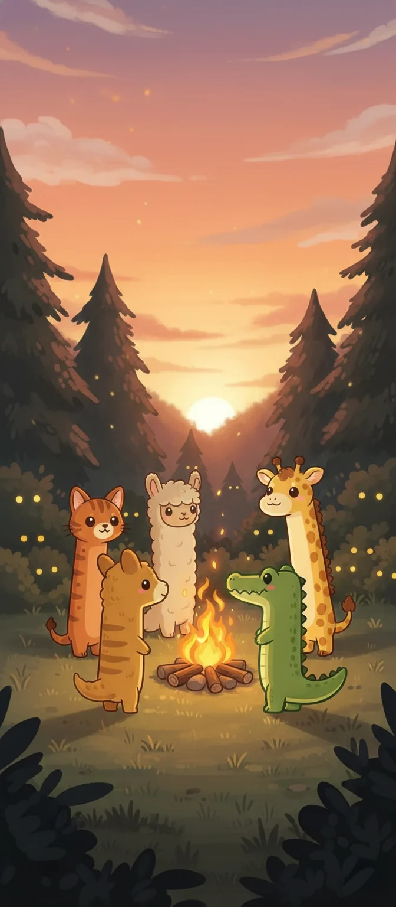

01 / ANSHIN LABS기분 좋은 모험을 만드는 게임 스튜디오
작은 친구들과,더 큰 모험.
동물 친구를 구하는 포근한 퍼즐부터 작은 노모들이 펼치는 커다란 전투까지.
우리의 게임 만나기어떤 모험을 떠나볼까요?
서로 다른 즐거움. 같은 따뜻한 마음.

우리의 이야기
오래 기억할 작은 즐거움.
ANSHIN LABS는 개성 있는 친구들과 다시 찾아오고 싶은 세계를 만듭니다. 가볍게 시작해서, 나만의 방식으로 오래 즐기는 게임을 전합니다.
만나서 반가워요. 함께 놀아요.PLAYER SUPPORT
무엇을 도와드릴까요?
궁금한 점이나 도움이 필요한 일이 있다면, 플레이 중인 게임을 선택해 주세요.
info@anshin-labs.com ↗
문의할 때 게임 이름과 유저 ID를 함께 적어 주세요. 비밀번호는 보내지 마세요.